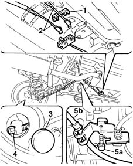

3380A30 handbrake cable - r+r
- Path
- Procedures > 33 BRAKING SYSTEM > 3380 HANDBRAKE > 3380A handbrake control and linkage > 3380A30 handbrake cable - r+r
- Kind
- repair procedure (removal / refitting; the operation number is the code)
- Applies to
- all engines; all production periods
- Interactive page
- https://sloeber94.github.io/elrnDB-fMltpl/en/#/2891663
Applies to: all engines; all production periods
 Removing
Removing
 Refitting
RefittingPlace the vehicle on a lift.
Check that the handbrake is released.
1. Ope the band retaining the handbrake cables.
2. Disconnect the cables from the idler.
3. Remove the protective cap.
4. Disconnect the handbrake cable from the shoes.
5. Undo the bolt (5a), releae the handbrake cable (5b) from the support, then remove it.

Applies to: all engines; all production periods
Refitting
RemovingPosition the handbrake cable and connect it to the rear shoes.
Fit the protective cap.
Tighten the bolt for the handbrake cable support to torque.
 | Fastening | Component | Ø | Value (daNm) |
|---|---|---|---|---|
- | Bolt | HANDBRAKE LINKAGE MOUNTS | M8 | 2.5 |
Connect the cables to the idler.
Close the band securing the handbrake cables.